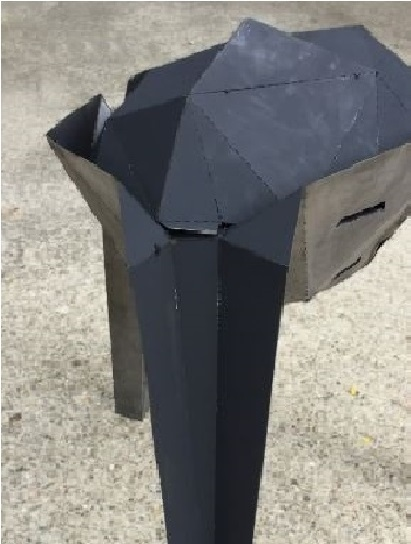

Gallary





This project explored the connection between digital design and fabrication. Mesh relaxation and surface subdivision were used to create the geometry, which was materialized through the cutting and welding of sheet metal. The final product features a grill with multi-facets body, a lid whose characters are coherent with the body, and parametrically designed trays that create different temperature zones.